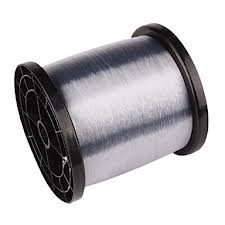
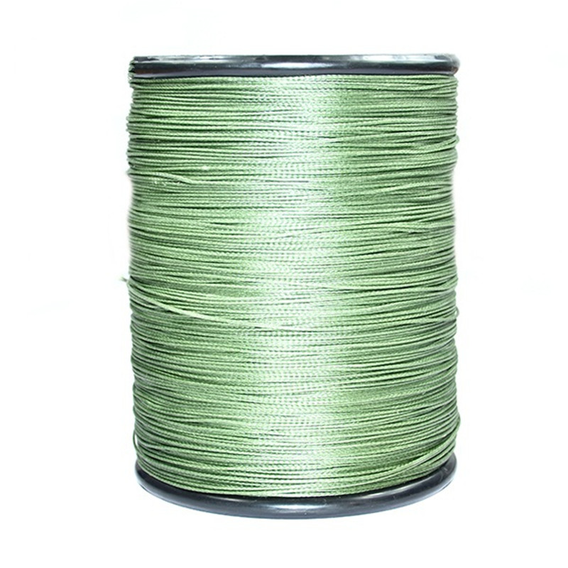

Монофильная
Плетеная
 
Преимущества:
1.Низкая стоимость.
2.Прочность – качественные монофильные лески прочны и надежные. Обязательным условием удачной покупки является приобретение лески в специализированном магазине.
3.Эластичность, жесткость – при забросе у рыбака редко возникают проблемы с запутыванием.
4.Популярность – данную леску продают в каждом рыболовном магазине.Основным недостатком монофильной лески является растягивание в воде. Все же специалисты рекомендуют новичкам начинать ловить рыбу, только начиная с рыболовной мононити.
Плетеный шнур представляет собой прочную леску, изготовленную из тончайших, плотно сплетенных между собой волокон. Чаще всего данную леску используют при джиговом способе ловли.
Преимущества:1.Растяжениям категорическое нет – плетеный шнур в воде практически не растягивается.2.При ловле с использованием этой лески рыбак хорошо чувствует движения приманки.
3.Прочность – плетеный шнур признан рыбаками как самый прочный и надежный.
Плетенка обладает всего двумя, но очень существующими преимуществами, которые обеспечивают ей популярность и уважение рыболовов. Однако, эта леска не лишена недостатков.
На практике плетенка часто путается и переплетается. К тому же качественная рыболовная леса стоит недешево. Плетенку хорошо видно в воде. Ловля на эту лесу с флюкарбоновым поводком позволяет рыбаку избежать возникновение данной проблемы. При неаккуратном обращении плетенка может порезать пальцы. Со временем леса теряет свои отличные технические характеристики. Плетенку необходимо покупать только у ведущих производителей – прослужит дольше.